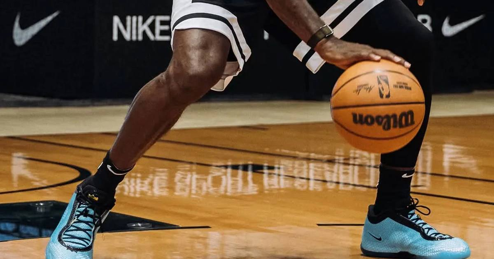

LeBron 24 Is Nike's Lightest Signature Shoe
The LeBron 24 goes on sale today, November 1, 2026, through Nike and select retailers — Nike's lightest signature shoe, built around a KingKnit upper.

Disclosure: this post contains affiliate links. I earn a commission on qualifying purchases.
The LeBron 24 goes on sale today, November 1, 2026, through Nike and select retailers. It is Nike's lightest signature shoe.
The headline: lightest yet
The whole pitch of the LeBron 24 is reduction. Where past LeBron signatures have leaned big and built-up, this one is positioned as the lightest in the line — a shoe stripped down to what the game actually needs.
KingKnit
The key technology is the KingKnit upper, built for lightweight strength. That is the trade the shoe is making: less bulk, without giving up the structure a basketball shoe has to deliver on cuts and landings.
Shoe: LeBron 24
Claim: Nike's lightest signature shoe
Upper: KingKnit, built for lightweight strength
On sale: Today, November 1, 2026
Where: Nike and select retailers
Stars colorway: November 12, 2026
Release dates to know
The general launch is today, November 1, 2026. The Stars colorway follows on November 12, 2026 — so if Stars is the pair you want, that date is the one to watch rather than today's drop.
Source: LeBron 24
Watch
Source: LeBron James' Nike LeBron 24, THE LIGHTEST LEBRON EVER (STATION KICKS) — a look at the Nike LeBron 24, presented as the lightest LeBron sneaker ever.